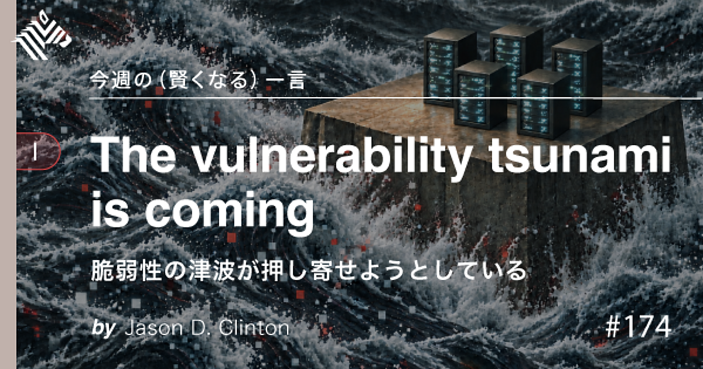

01【ミニ教養】「インターネット」はもう終わりを迎えました
発行日時：2026年10月25日 05:30:03 JST

あなたに関係ありそうな理由
入居者情報や決済情報を預かる仕事では、本人確認やアカウント保護が業務の土台です。AIエージェントの権限設計や、侵入後の被害を限定する考え方は、社内システムや委託先の運用を見直す際にも役立ちます。
概要
筆者は米国での中間選挙取材を終えた直後、カード会社を名乗る電話で「10月5日に作ったカードで銃が購入された」と告げられます。通知欄にも有名カード会社の名前が表示され、情報漏えいを疑いますが、AIに相談して番号表示は偽装できると知り、情報を聞き出す詐欺の可能性に気づきました。記事はこの体験から、ネットの向こうにいる相手が人間か、本人なのかを見分ける前提が揺らいでいると指摘します。AI時代には、文章や声、画面の表示だけで相手の真正性を確かめることが難しくなり、本人確認を支えてきた「信頼」の仕組みそのものが試されます。
続いて記事は、米大手銀行が顧客口座内で、許可されていない第三者のAIエージェントを検知したという報道を紹介します。一部は利用者の指示とは無関係に見える操作を試み、銀行側は人間と不正ボットを区別しづらいため、利用を遮断したり規約を書き換えたりする対応を急いでいます。正規のAIアシスタントが利用者の代理としてログインする場合も、権限の範囲や意図しない動作をどう判定するかが問題になります。利便性を優先して認証情報を渡すだけでは、本人の意思に沿った操作かどうかを確かめられません。
記事はさらに、サム・アルトマンが講演で、AIモデルは従来の脅威想定を超える脆弱性を見つけるため、すべてをパッチで塞ぐ発想だけでは防御できないと語ったことを紹介します。これは修正を諦めるという意味ではなく、攻撃を前提にした防御全体の組み替えが必要だという主張です。アンソロピックのセキュリティ責任者も、重要インフラの脆弱性が短期間に大量に見つかり、修正が追いつかなくなる懸念を示し、ネットワーク分離やエアギャップを挙げています。
コメントでは、インターネット上の主体が人だけではなくなった点を重く見る意見と、刺激の強いタイトルに対して過度な終末論ではないかと距離を取る意見が並びます。記事が示す実務的な方向は、すべての欠陥をゼロにすることだけに頼らず、重要な情報を分離し、権限を絞り、侵入や誤作動が起きたときの被害範囲を小さくすることです。AIを使う側にも、どの情報にアクセスさせ、どんな操作を許すのかを具体的に決める課題が残ります。
仕事や会話で使える一言
AIには、何の情報へどの操作まで許しているかを先に決めよう。
NewsPicksで原文を読む
02【厳戒】「秘密を守れない時代」に富裕層が取った策
発行日時：2026年10月25日 05:30:02 JST
あなたに関係ありそうな理由
賃貸物件でも、入居者や所有者の氏名、所在、生活状況などを扱います。秘密保持を契約書だけで済ませず、委託先や現場で情報に触れる人まで含めて、何を共有し何を記録しないか考える材料になります。
概要
ニューヨーク・タイムズの記事をもとに、富裕層が身近な仕事相手にも厳しい秘密保持契約を求める動きを紹介します。象徴的な事例は、著名人の庭を手掛ける造園デザイナーです。本人だけでなく、従業員、下請け業者、苗木の仕入れ先、一緒に働く職人まで守秘義務の対象にする契約が提示され、現場でGoogleのスマートグラスを着用することまで禁止されていました。秘密を知り得る範囲が発注者と直接契約する担当者にとどまらないため、関係者全体に義務を広げようとしています。
記事に登場する弁護士は、こうした依頼が10年間で約100倍に増え、とくに直近5年で急増したと説明します。かつて一段落ほどだった契約条項が、今では15ページに及ぶ例もあるといいます。対象は企業秘密に限りません。自宅の場所、資産、健康状態、家族の事情、警備体制など、仕事の現場で偶然知る個人情報が、写真や会話を通じて広がることへの懸念があります。情報を知られたくない本人にとっては、漏えいが評判の毀損だけでなく、脅迫や金銭要求につながる可能性も問題になります。
契約の対象を広げるほど、情報を知る人を制限しやすくなる一方で、現場で働く人や小規模事業者に大きな負担がかかります。造園業者の事例では、仕入れ先など自社の管理外にいる関係者まで契約に含めるため、依頼を受ける側はどこまで責任を負えるのかを検討せざるを得ません。単に「秘密を漏らさない」と書くだけでは、対象情報、共有先、例外、違反時の責任が曖昧なまま残り、過度に広い条項が実務を妨げることもあります。
記事は、最高裁や政府機関でも守秘契約を活用する動きに触れ、秘密を守る仕組みが一部の富裕層だけの話ではなくなっていると伝えます。コメントには、契約を強化するだけで秘密が守れるのかという疑問や、従業員・取引先を一律に縛ることへの懸念が見られます。焦点は、秘密を守る必要性と、誰がどの情報に触れるかを現場で管理できるかの両方です。契約を結ぶ前に、情報の種類、保管方法、共有範囲、削除や返却の手順まで定める必要があります。記事は、契約の有効性と現場への負担も考えるよう促しています。記事は、契約の有効性と現場への負担も考えるよう促しています。
仕事や会話で使える一言
秘密を守るなら、契約相手だけでなく情報に触れる人と流れを決めよう。
NewsPicksで原文を読む
03【皮肉】自由な社会が「終わらない競争」を引き起こしていた
発行日時：2026年10月25日 05:30:00 JST
あなたに関係ありそうな理由
採用、育成、チーム運営では「本人のやりたいこと」と「組織が必要とする役割」をどう両立するかが課題になります。個人の自由と共同体の支えを二者択一にせず、仕事の設計を考える視点を得られます。
概要
記事は、就職活動や仕事で「あなたならではの強み」「本当にやりたいこと」を問われ続ける感覚から出発し、人類学者の磯野真穂氏に、なぜ「自分らしさ」が重荷にもなるのかを聞きます。磯野氏は、自分の意思や望みを何より尊重する価値観が強まり、外から与えられる役割は抑圧と見なされやすくなったと説明します。しかし、やりたいことがすぐに見つかるとは限りません。仕事や人との関わりを通じて自分が分かる前に、内面から答えを出すよう求められることで、答えられない人は苦しさを抱えます。
組織の側にも難しさがあります。上司が具体的に「これをやって」と指示すれば、押し付けやハラスメントと受け取られるのではと恐れ、最後には「あなたは何をしたいの」と問うだけになりがちです。記事は、自己実現をめぐる考え方を、自分を鍛えて能力を高める方向と、社会の抑圧を取り除く方向の二つに整理します。どちらも単独では、終わりのない自己研鑽や、問題をすべて外部のせいにする見方へ傾く可能性があります。
さらに、個人の独自性を求める一方で、企業が業務の属人化をなくそうとする矛盾も扱います。誰でも同じ仕事をできる仕組みは事業継続には有効ですが、行き過ぎれば「あなたでなくてもよい」と人を交換可能な存在として扱い、AIに置き換えればよいという発想につながりかねません。磯野氏は、属人化の問題を直すことと、個人に依存する要素をすべて取り除くことは別だと述べます。人間関係や役割の仕組みには欠点もありますが、欠点があるから丸ごと捨てればよいわけではありません。
記事後半では、推し活やSNSが一時的なつながりや高揚を与える一方、生活を支える制度やインフラへ働きかける力とは異なると論じます。自分の気持ちを支えてくれる場があっても、住まいや仕事、サービスの問題を変える手段がなければ、日常の不自由さは残ります。コメントでは「自分らしさ」を求める風潮への共感や、共同体を理想化しすぎないようにという注意が見られます。読者に投げかけられるのは、個人の希望を尊重しながら、役割や支え合いをどう設計し直すかという問いです。自由を支える関係も見直されます。自由を支える関係も見直されます。
仕事や会話で使える一言
本人の希望を聞くだけでなく、役割と支えを一緒に設計しよう。
NewsPicksで原文を読む
04AI設備投資、約158兆円予測に米銀が警鐘──投資家が選ぶべき企業の条件
発行日時：2026年10月25日 08:00:00 JST
あなたに関係ありそうな理由
AIのニュースではモデル企業の話題が目立ちますが、実際の投資は半導体、電力、冷却設備、通信網などにも広がっています。事業会社の設備計画や、投資先・取引先の集中リスクを検討する視点として読めます。
概要
Forbes JAPANの記事は、米大手テクノロジー企業のAI向け設備投資が急拡大するなか、その金額に見合う収益が得られるのかを投資家に問いかけます。記事が示す予測では、Amazon、Microsoft、Alphabet、Metaの4社は2026年に合計7000億ドル超、約158兆円規模の資本支出を計画しています。これは2025年の約4100億ドルからおよそ75％増える水準で、支出の約4分の3はAIインフラに向かう見通しです。投資した設備が売上や利益に結びつくかを確かめます。
投資対象はGPUだけではありません。AI用データセンターには、半導体やメモリーのほか、ネットワーク機器、電力供給、冷却設備、建物などが必要です。そのためAI投資の効果は、モデルを開発する企業だけでなく、インフラを構成するサプライチェーンにも及びます。Microsoftについて記事は、AI関連の年間売上換算額が370億ドル規模に達したことを挙げます。またGoogle Cloudの受注残は4600億ドルを超えるとされ、需要を示す数字として紹介されています。ただし、受注残や売上ランレートは、支出をどれだけ回収できるかをそのまま保証するものではありません。
会社ごとに収益化の経路も異なります。クラウド事業を持つ企業は、計算資源の提供やAIサービスの利用料を通じて投資を回収できます。一方、Metaのように広告事業を中心とする企業は、AIを広告配信や利用者向け機能に組み込み、既存事業の効率や売上を高める必要があります。記事は、設備投資が営業キャッシュフローの大部分を占めるほど大きくなれば、投資の時期や回収速度が企業の財務に与える影響も無視できないと説明します。
NewsPicksのコメントでは、AI投資が増えること自体への期待と、投資回収やデータセンター建設への慎重論が並びます。記事の中心は「AIブームが続くか」という予想より、個々の企業が何に投資し、誰が代金を払い、どの程度の現金を生むかを追うことです。投資家には、ハイパースケーラーや半導体メーカーだけに注目せず、設備を支える企業や電力などの供給制約も含めて全体を調べるよう促します。大規模な支出が続くほど、需要が計画を下回ったときの影響や、特定企業への集中も確認すべき論点になります。
仕事や会話で使える一言
AI投資は金額より、誰が支払い、いつ現金に変わるかを確認しよう。
NewsPicksで原文を読む
05「資産」から「管理しきれない負債」へ。高騰を続けたマンション市場に訪れた値崩れとスラム化の足音
発行日時：2026年10月25日 15:54:38 JST
あなたに関係ありそうな理由
賃貸管理や保有物件の運営では、売買価格だけでなく、修繕費、人手、管理組合の合意形成が長期の資産価値を左右します。保有・購入の判断で、建物の管理可能性まで点検する必要を考えさせる記事です。
概要
日刊SPA！は、都心のマンション価格が上がり続ける局面から変化し、中古物件の売り出し価格が下落に転じたと報じます。東京カンテイの調査では、2026年6月に東京23区の売り出し価格が26カ月ぶりに下落しました。不動産事業プロデューサーの牧野知弘氏は、価格高騰と金利上昇で高収入の共働き世帯も購入しにくくなったこと、外国人購入者の資金が細っていることを要因として挙げます。転売目的の業者の在庫が膨らみ、売り急ぎが出れば、下落幅が想定より大きくなる可能性も指摘されています。
不動産ジャーナリストの榊淳司氏は、都心の価格が2022年以降に大きく上がった反動を説明し、最悪のケースではタワーマンションの中古価格が3分の1程度まで下がる可能性に触れます。価格上昇を前提に買って売る取引が難しくなり、晴海フラッグなどでは売り物が増えても買い手がつかない状況が紹介されます。新築の在庫も増え、販売価格を表立って下げずに実質的な値引きをする「ステルス値下げ」も起きています。記事は、値下がり局面で買い手がさらに様子見をすることで、販売が一層難しくなる構図を示します。
市場価格の変化以上に、記事が重く見るのは建物を維持する費用と担い手です。建設業の人手不足で修繕工事を請ける業者が減り、老朽マンションでは相続後に管理費や修繕積立金を払わない所有者が増え、管理会社が撤退する例も出ています。タワーマンションは管理費と修繕積立金が高く、専門家は一般的なマンションの月額負担を専有面積1平方メートル当たり約500円とする一方、タワマンでは1000円でも追いつかないほど費用が膨らんでいると説明します。70平方メートルの住戸ではローンのほかに月10万円ほどの維持費がかかる場合があるとしています。
さらに、20階以上のタワマンで使われる外壁の目地材はおよそ15年ごとの交換が必要とされ、建築資材と人件費が上がるなか、二度目の大規模修繕を実施できるかが課題になります。記事の最後は、金利上昇下で増える50年ローンにも警鐘を鳴らします。期間が長いほど金利が高く設定され、返済初期は利息の割合が大きく元本が減りにくいと専門家は述べ、金融庁も慎重な取り扱いを促しています。コメントでも価格の予測だけでなく、管理費や修繕の負担を含めた購入判断が論点です。
仕事や会話で使える一言
価格だけでなく、10年後に修繕と管理を続けられる物件か見よう。
NewsPicksで原文を読む